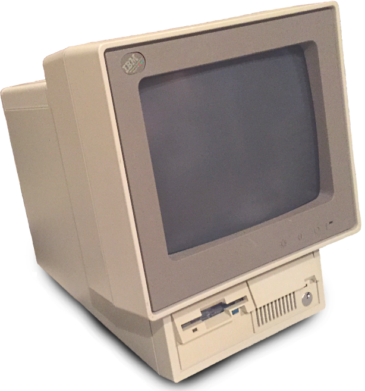

I live in Toronto, Canada with my delightful daughter, wonderful wife, cuddly cat, and dashing dog.
I work as a Software Developer, which was probably a foregone conclusion ever since my mom bought me my first computer: an IBM PS/2 Model 25 286.
Pretty soon I was writing simple games in QBasic and exploring Bulletin Board Systems and then, of course, I fell in love with "World Wide Web". My first big project for the web was a video game fan-site named Jedi Nights. Being part of the community that arose from the site was so much fun!
After graduating from the University of Toronto, I worked happily as a freelance developer, but eventually took jumped on an opportunity to help found a company, where I got to learn about Java Enterprise Edition, art asset pipelines, and project planning!
After almost five years, I switched gears to build a content management and publishing system for a marketing company. I'm happy to report that that product is still going strong to this day! Then for something completely different, I decided to join an ISP where I worked on systems to manage network switches, to power a bespoke IPTV solution, and to empower customers to manage their services.
Today, I work at Points, where I help to enhance and extend the Loyalty Commerce Platform.
In my spare time, I enjoy tinkering with Small Form Factor computers, PF firewalls, IP Security Cams, HTPCs..."It's a UNIX system! I know this!"